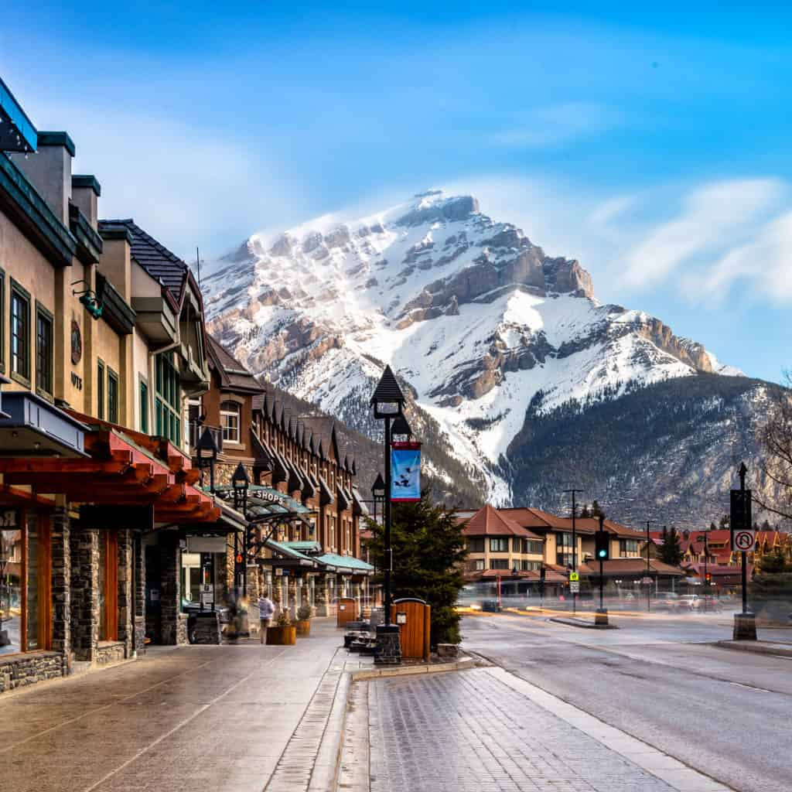
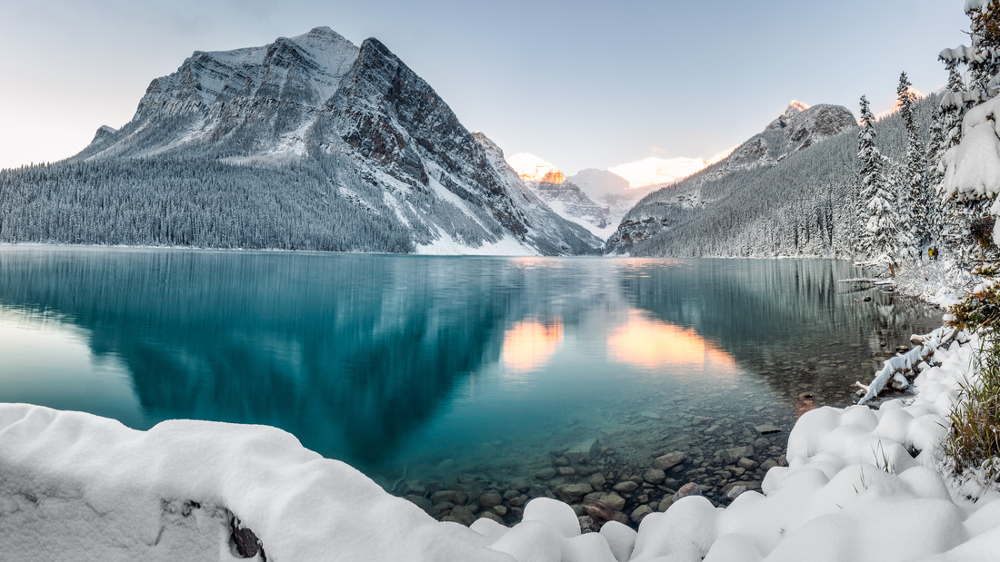
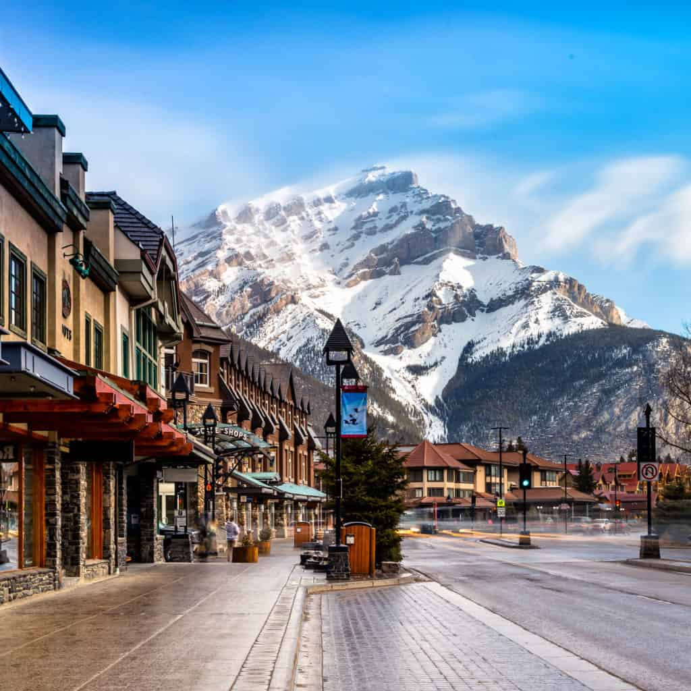
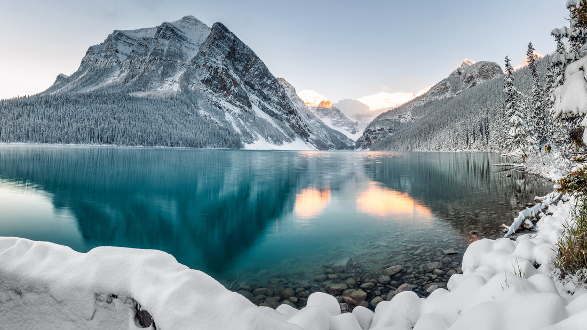

Travel
Nanjing Fuzi-Qinhuai


Nanjing is a popular city full of Chinese history and old traditional southern kinds of agriculture. As a northern people from China, Nanjing was the first city that I traveled to the region south of the Yangtze River. Confucius Temple - Qinhuai River is the most famous place to show the beauty of Nanjing.
Confucius temple has many traditional temple agricultures inside and many small shops about traditional Nanjing specialties and popular restaurants. There are also many colorful traditional lanterns which made the night of qinhuai more gorgeous. People can also take the “Hua Fang” ( a special kind of ship) to travel around the river and the whole scenery.
Photo Gallery


Banff
Geographical location: North America


Banff is Canada’s first national park. The park spans 2,564 square miles. Here you can see the Rocky Mountain peaks and beautiful turquoise glacial lakes.
In addition to the magnificent nature of Banff, there are many things to explore in the downtown area. Banff Avenue and Bear Street have many stores to enjoy shopping. You can also learn of the natural and cultural history by visiting many museums and historical sites.
Photo Gallery
 





Barcelona, Spain


Barcelona, is a beautiful city on the Northeastern coast of Spain that is the byproduct of a rich and artistic history with modern infrastructure. One of the main attractions of the city is its gorgeous architecture, often the work of world renowned architects such as Antoni Gaudi. Some of the most notable works are the modern Basilica of La Sagrada Familia, and the tranquil and eloquent Park Güell.
Much of Barcelona’s charm comes down to local culture, from diverse culinary offerings, to the sunny vacation-ridden atmosphere of the beaches, and even the symbolism of nationalism and independence that Barcelona residents display. The passion of the locals is unwavering, including in famous soccer matches by one of the sports greatest clubs: F.C. Barcelona, and in numerous local artistry events. It is no wonder why many travelers to Spain feel rejuvenated and fortunate enough to have experienced the city’s irresistibly strong culture and atmosphere.
Photo Gallery

The view from the world famous Park Güell

Barcelona fans demonstrate their passion from the Camp Nou

View of a popular strip on Barcelona’s most famous beach

Stunning display of modern structure with vintage architecture at La Sagrada Familia

Nighttime view of the contrast between modern and classical Barcelona
Sofia, Bulgaria


Sofia is the capital city of Bulgaria, a country located in Eastern Europe. It is part of the European Union and the primary language spoken is Bulgarian. The city’s population is around 1.3 million. In addition to its urban structures, Sofia also contains a mountain peak called “Vitosha”
Vitosha is located 30 minutes from the capital’s center, and can be reached by foot, car, and by lift. The peak has an elevation of 7,520 feet and during the summer months the average temperature is around 64 degrees fahrenheit. This makes it a great sight for any type of traveler who seeks the outdoors.
Photo Gallery


Linxuan Ji